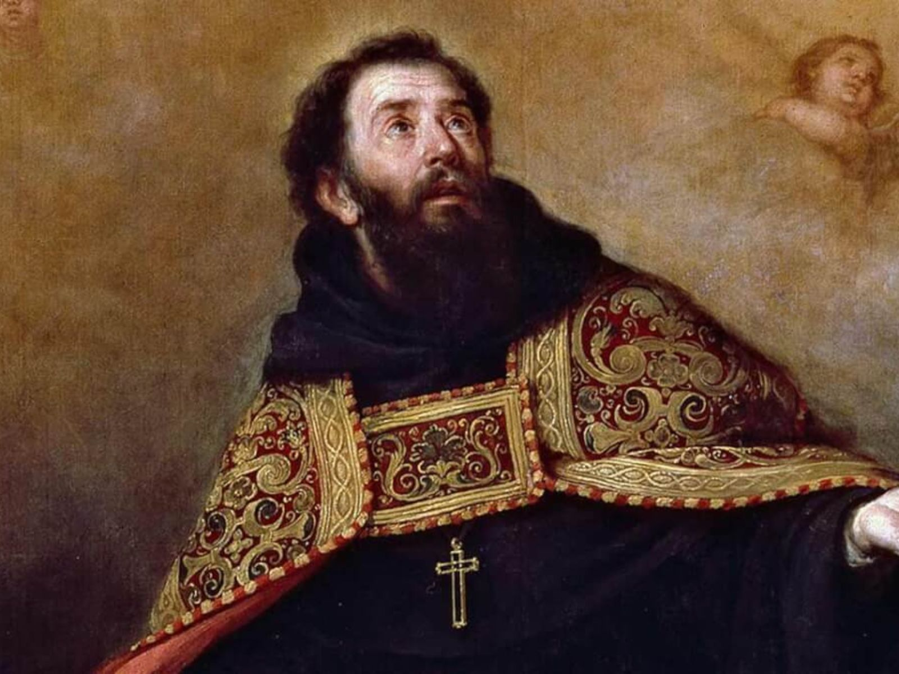

Coleção Completa
Acesso a documentos fundamentais organizados cronologicamente,
desde o século I até os dias atuais.
Mergulhe em séculos de sabedoria cristã. Do Didaqué aos pais da igreja,
da Reforma
Protestante à teologia contemporânea.
Documentos Históricos
Séculos de História
Autores Clássicos
Usuários Ativos
Nossa missão é preservar e tornar acessível a rica tradição teológica cristã,
desde os primeiros
escritos apostólicos até as discussões contemporâneas.
Acesso a documentos fundamentais organizados cronologicamente,
desde o século I até os dias atuais.

Quiz e recursos educacionais para aprofundar seu conhecimento
sobre história da igreja e teologia.
Acesso a textos desde o Didaqué até teologia contemporânea

Estudos completos de Agostinho, Jerônimo e outros

Documentos fundamentais de Lutero, Calvino e reformadores

Teste seus conhecimentos teológicos
check_circle Visão geral com contexto histórico completo
check_circle Interface intuitiva e fácil navegação
check_circle Quiz interativo para testar conhecimentos
check_circle Blog com artigos históricos
Insigts e análises profundas sobre teologia e história da igreja
Um dos primeiros escritos atribuídos aos cristãos da Igreja primitiva recebeu o nome de “Didaqué”, uma palavra de origem grega, que significa “instrução”, “doutrina”, “ensinamento”. Trata-se de um escrito instrutivo que data do final do primeiro século da era cristã. Isso significa que seus autores viveram num período muito próximo da escrita do Novo Testamento.

Santo Agostinho de Hipona (354-430 d.C.) é indiscutivelmente um dos teólogos mais influentes da história cristã. Sua teologia da graça, desenvolvida em resposta às controvérsias pelagianas, moldou profundamente o pensamento cristão ocidental.
Em 31 de outubro de 1517, Martinho Lutero, um monge agostiniano e professor de teologia em Wittenberg, afixou (ou enviou para revisão) suas 95 Teses na porta da igreja do castelo. Este ato, aparentemente acadêmico, desencadeou uma revolução religiosa que transformaria o cristianismo ocidental.
Junte-se a centenas de estudantes de teologia e aprofunde seu conhecimento sobre a tradição cristã hoje mesmo.
O Didaqué, também conhecido como “A Instrução dos Doze Apóstolos”, é um dos documentos cristãos mais antigos fora do Novo Testamento. Descoberto no século XIX, ele oferece uma visão rara sobre como os seguidores de Jesus viviam sua fé nos primeiros anos após a ressurreição.
Diferente de tratados teológicos profundos, o Didaqué funciona como um manual simples e prático. Ele aborda temas como moral cristã, instruções para o batismo, o modo de celebrar a ceia do Senhor e a vida comunitária. É como se fosse um pequeno “catecismo” usado pelos primeiros cristãos.
O Didaqué nos mostra como a fé cristã era vivida antes mesmo da formação das grandes tradições da Igreja. Ele revela uma comunidade comprometida com a santidade, a simplicidade, e o amor fraterno — pilares que ainda inspiram cristãos hoje.
Estudar o Didaqué é como abrir uma janela para o cristianismo em sua forma mais primitiva. Baixe aqui o DIDAQUÉ

Poucos nomes na história da igreja têm tanto peso quanto Agostinho. Bispo de Hipona. teólogo brilhante e autor de obras como Confissões e A Cidade de Deus, ele influenciou profundamente a teologia, a filosofia e até a política ocidental.
Antes de se tornar cristão, Agostinho viveu uma vida marcada pela busca de prazer e conhecimento. Sua conversão dramática — descrita em suas Confissões — mostra como ele encontrou em Cristo o sentido que buscou por tantos anos.
A doutrina da graça e a luta contra o pelagianismo
Uma visão profunda sobre a natureza humana e o pecado
Reflexões filosóficas sobre o tempo e a realidade
Uma defesa brilhante da fé cristã em tempos de crise
Até hoje, cristãos, filósofos e historiadores reconhecem Agostinho como uma das mentes mais importantes de todos os tempos.
Em 1517, Martinho Lutero afixou suas famosas 95 Teses em Wittenberg, criticando abusos da Igreja medieval. Esse ato marcou o início da Reforma Protestante, um dos movimentos mais transformadores da história.
Lutero não pretendia dividir a Igreja, mas chamar a atenção para práticas que considerava contrárias ao evangelho — como a venda de indulgências. Sua intenção era promover arrependimento e uma volta às Escrituras como autoridade máxima da fé.
A Reforma rapidamente se espalhou pela Europa, originando diversas tradições protestantes. Ela também influenciou áreas como educação, política, tradução bíblica e liberdade religiosa.
Hoje, cristãos de várias denominações reconhecem a importância desse movimento para o desenvolvimento da fé cristã.